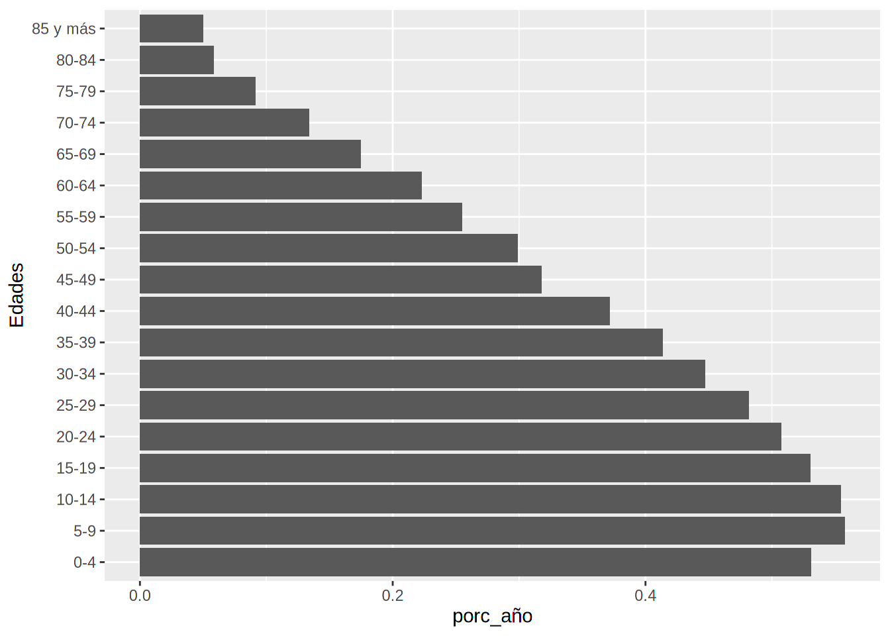
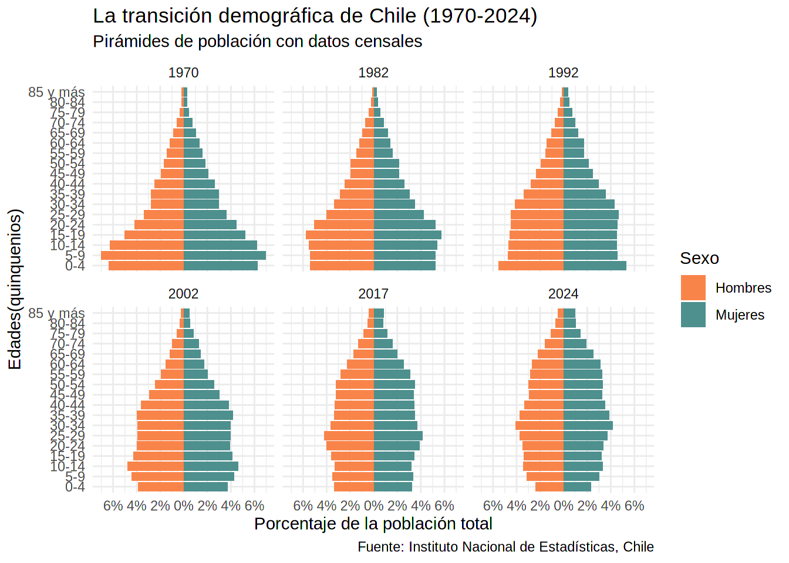
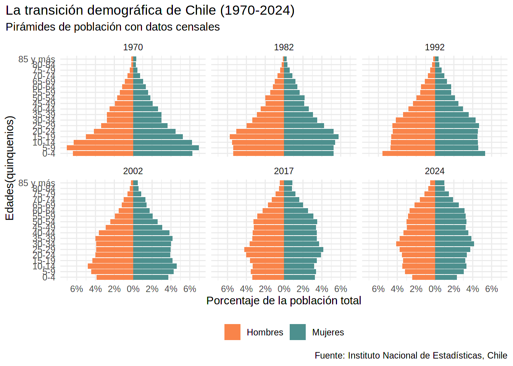

pacman::p_load(tidyverse, # Paquetes de data science básicos
readxl, # Cargar archivos xlsx
scales, # Ajustar etiquetas de gráficos
paletteer, # Cargar paletas de colores
gganimate, # Animar gráficos
ggtext, # Funciones de texto
glue) # Paste con esteroidesEn los últimos años, se ha reactivado en Chile el debate sobre el envejecimiento de la población y los cambios en la tasa de natalidad. En particular, con la última Reforma de Pensiones apareció nuevamente la preocupación por la vejez y cómo la sociedad y el Estado se deben hacer cargo de este proceso vital (al menos eso se discutió, que se logre es otro tema). Se habla que cada vez habrá más población adulta y adulta mayor, que población infantil y juvenil. Estas transformaciones son características de diferentes sociedades, y las primeras en enfrentarlo fueron las potencias económicas europeas. A día de hoy, países como Chile, en el Sur Global, han homologado esas tendencias, con sus particularidades.
Si bien no es el propósito definir las causas y consecuencias, es importante mencionar que estas son de carácter económico, social y cultural, y entre los factores que inciden podemos mencionar (sin un orden particular) las migraciones urbano-rurales, el acceso a educación, mejoras en la salud y medicina, la integración femenina en el mercado laboral, cambios en los roles de género, la educación sexual y la planificación familiar, entre otros.
Pirámides de población y transición demográfica
Uno de los dispositivos visuales más efectivos para mostrar estos fenómenos son las pirámides de población. En esencia, son histogramas que segmentan la población por edad (usualmente en quinquenios) y sexo, mostrando a hombres a la izquierda y mujeres a la derecha.
Las barras pueden representar la cantidad absoluta de la población, o su frecuencia relativa. Los datos absolutos son útiles para representar el aumento neto de los habitantes, pero son menos útiles para comparar con otros casos, siendo esto una ventaja que ofrecen las pirámides que usan porcentajes.
La demografía, ciencia que estudia las poblaciones humanas, su composición y cambio, ha teorizado en torno a las formas que toman las pirámides de población en las diferentes sociedades. Los cambios vividos durante el siglo XX han generado una transición demográfica, pasando de altas tasas de natalidad y mortalidad, a bajas tasas en ambos indicadores. Esta teoría, que considera en 5 fases, explica cómo ocurre este cambio, y su impacto en la población total.
Visualmente esto se refleja en la forma de las pirámides de población. Aquellas sociedades con altas tasas de natalidad y mortalidad (fase 1) tienen pirámides con una forma de campana muy marcada con gran cantidad de niños y jóvenes. En el otro extremo tenemos a países de bajas tasas de natalidad y mortalidad, cuyas pirámides tienen una forma más homogénea o pareja, casi como una campana invertida, con muy poca población jóven y una gran mayoría adulta y adulta mayor.

Para profundizar en torno a esto recomiendo leer los artículos de Wikipedia sobre Pirámides de Población y Transición demográfica, además de este artículo escrito por Max Roser en Our World in Data.
El caso de Chile
Para conocer el cambio demográfico de Chile debemos recurrir a la principal fuente de información: el Censo de Población y Vivienda. Este levantamiento de datos es ejecutado por el Instituto Nacional de Estadísticas desde el siglo XIX y sus últimas versiones fueron realizadas en los años 1970, 1982, 1992, 2002 y 20171. A fecha de hoy, marzo de 2025, el INE acaba de publicar los primeros resultados resultados del último censo de 20242. Con estos nuevos datos un buen ejercicio es evaluar el cambio demográfico del país en los últimos 60 años.
Obtención de los datos
Para acceder a los datos censales el INE ha dispuesto en su página web diferentes alternativas para obtener la información. Para el Censo de 2017 están disponibles los micro datos y las bases en Redatam, mientras que para los censos de 1992 y 2002 solo están disponibles en Redatam. Los datos de 1970 y 1982 solo son accesibles a través de las memorias publicadas con los resultados, ambos en formato .pdf en el sitio del INE.
Por ello, el proceso comenzó con la obtención de los datos desde la plataforma Redatam Web para los censos de 1992, 2002 y 2017, solicitando tablas cruzadas con el sexo y la edad en quinquenios. En el caso de 1970 y 1982 fue necesario revisar manualmente los documentos y copiarlos a una planilla de cálculo3. Dado que para el Censo de 1970 los datos agrupados disponen como máxima categoría de edad “85 años y más” fue necesario agrupar al resto de datos acorde a esta categoría máxima.
Todos los datos quedaron registrados en diferentes archivos de planilla de calculo (.xlsx).

Manos a la obra: pirámides de población en R
Preparación y transformación de los datos
Para comenzar, mi flujo de trabajo se basa en Rstudio Projects. Lo primero es cargar paquetes y los archivos.
# El número indica el año del censo
base_70 <- read_xlsx("data/composicion_poblacion.xlsx", sheet = "censo_70")
base_82 <- read_xlsx("data/composicion_poblacion.xlsx", sheet = "censo_82")
base_92 <- read_xlsx("data/1992_reporte.xlsx", sheet = "censo_92")
base_02 <- read_xlsx("data/2002_reporte.xlsx", sheet = "censo_02")
base_17 <- read_xlsx("data/2017_reporte.xlsx", sheet = "censo_17")
base_24 <- read_xlsx("data/2024_reporte.xlsx")Ya que los datos quedaron en 6 objetos diferentes, los unimos con el siguiente código:
# unimos todo en una lista
lista_total <- list(base_70, base_82, base_92, base_02, base_17, base_24)
# aplicamos rbind a cada elemento de la lista
union <- do.call(rbind, lista_total)Al tenerlo unido, podemos aplicar algunas técnicas de limpieza. Por ejemplo, quitamos la etiqueta “años” de las categorías de edad, y los transformamos en factor. Luego pivoteamos al formato largo, pasando de dos columnas (Hombres-Mujeres) a otras dos (Sexo-Población).
consolidado <- union |>
# removemos la etiqueta "años"
mutate(Edades = str_remove(Edades, " años"),
Edades = str_remove(Edades, "\\s\\s"),
# Transformamos a factor en el orden en que aparecen
Edades = fct_inorder(Edades)) |>
pivot_longer(cols = 3:4,
names_to = "Sexo",
values_to = "Poblacion")Como resultado obtenemos el siguiente tibble/data frame, con el año de censo, el tramo de edad, el sexo y la cantidad de población:
| Año | Edades | Sexo | Poblacion |
|---|---|---|---|
| 1970 | 0-4 | Hombres | 567233 |
| 1970 | 0-4 | Mujeres | 555601 |
| 1970 | 5-9 | Hombres | 624134 |
| 1970 | 5-9 | Mujeres | 619796 |
| 1970 | 10-14 | Hombres | 559559 |
| 1970 | 10-14 | Mujeres | 554819 |
| 1970 | 15-19 | Hombres | 446729 |
| 1970 | 15-19 | Mujeres | 466736 |
| 1970 | 20-24 | Hombres | 370653 |
| 1970 | 20-24 | Mujeres | 398383 |
Con este data frame ya podemos crear una pirámide de población. Sin embargo, es recomendable trabajar las magnitudes en términos relativos o porcentuales, ya que nos permiten entender mejor la composición interna de las sociedades, dejando fuera el factor del tamaño total de la población. Además nos permite comparar temporalmente el mismo país y con otros países.
consol_porc <- consolidado |>
#Agrupamos por la variable año, que representa el total de población en cada censo
group_by(Año) |>
#Dividimos cada valor por el total poblacional de ese año
mutate(porc_año = Poblacion/sum(Poblacion))Con esto, nuestro data frame final queda tal como se ve a continuación. Para descargar este dataset, puede presionar los botones disponibles según el formato deseado.
Visualización de la pirámide de población
Con nuestro data frame listo podemos entrar directamente a lo que nos importa: visualizar nuestras pirámides de población.
Lo primero que debemos entender, tal como lo mencionamos antes, es que la pirámide de población es un histograma o gráfico de barras. Como ya tenemos categorizada y segmentada la información, optaremos directamente por un gráfico de barras horizontales, siguiendo el modelo típico. Pero además tiene otra característica: las barras de hombres y mujeres van en dirección opuesta, es decir, la barra que representa a las mujeres apunta a la derecha, y la que representa a los hombres apunta a la izquierda del eje X.
Vamos a ggplot2 con una primera versión básica de este gráfico.
consol_porc |> # Usamos el tibble
ggplot(aes(x = porc_año, y = Edades)) + # definimos variables x e y
geom_col() # Barras con el valor ya calculado
Esta primera salida cumple con algunas cosas: tiene en el eje Y las edades ordenadas de menor a mayor, y en el eje X los porcentajes de cada grupo etario. Sin embargo, por defecto ggplot2 está sumando los porcentajes de hombres y mujeres, y de todos los censos. Para separarlos por sexo usaremos el argumento fill
consol_porc |>
ggplot(aes(x = porc_año,
y = Edades,
fill = Sexo)) + # Relleno definido por la variable sexo
geom_col() Tenemos diferenciado por sexo, pero ggplot2 sigue sumando los datos de todos los levantamientos de censo. Para separar por año utilizaremos la función facet_wrap que nos permitirá recrear el mismo gráfico en diferentes cuadros o facetas.
consol_porc |>
ggplot(aes(x = porc_año, y = Edades, fill = Sexo)) +
geom_col() +
facet_wrap(.~Año)Ahora ya tenemos muy bien diferenciados los datos de hombres y mujeres en cada uno de los censos. Pero no tenemos una forma de pirámide ya que las barras se dibujan en la misma dirección, desde el Y hacia la derecha. Para ello, multiplicaremos los datos de hombres por -1 para moverlo hacia la izquierda.
p_base <- consol_porc |>
mutate(porc_año = #SObre escribimos la variable
if_else(Sexo == "Mujeres", #Evaluamos si el dato es de mujeres
porc_año, #Caso verdadero: queda igual (derecha)
porc_año * -1)) |> #Caso falso-hombres: va hacia la izquierda
ggplot(aes(x = porc_año, y = Edades, fill = Sexo)) +
geom_col() +
facet_wrap(.~Año)
p_base
Con esto ya tenemos la versión básica para poder comparar la composición etaria y de sexo de Chile desde 1970 a 2017.
Aplicando técnicas de data viz
Si bien el gráfico creado funciona y cumple con los criterios mínimos de nuestro objetivo, vamos a implementar algunas mejoras:
- Cambiar el color de las barras
- Ajustar las etiquetas del eje X
- Definir un tema para el gráfico, diferente del predeterminado.
- Definir un título, subtítulo y un pie de gráfico.
- Ajustar la leyenda.
Partimos ajustando el color de las barras. Para ello usamos las funciones scale_. Los colores pueden venir dados manualmente o por una paleta de colores. Como solo tenemos dos valores categóricos, usaremos valores ingresados manualmente.
p_base +
#Fijamos los colores hex dentro del vector
scale_fill_manual(values = c("#f9844a", "#4d908e")) Segundo, arreglamos las etiquetas del eje X. Acá tenemos dos cosas que hacer: agregar la etiqueta de porcentaje “%” y dejar en términos absolutos los valores que aparecen en negativo. Para esto usamos la función scale_x_continuous que permite definir las marcas (breaks) y las etiquetas (labels)
p_base +
scale_fill_manual(values = c("#f9844a", "#4d908e")) +
scale_x_continuous(breaks = seq(-0.06,0.06,by=0.02),
labels = label_percent(big.mark = ".",
decimal.mark = ",")) En el último código usamos la función label_percent() del paquete scales que normalmente es muy útil para formatear porcentajes. Pero como necesitamos deshacernos del signo negativo, utilizaremos una alternativa manual.
marcas <- seq(-0.06,0.06,by=0.02)
p_base +
scale_fill_manual(values = c("#f9844a", "#4d908e")) +
scale_x_continuous(breaks = marcas,
labels = percent(abs(marcas))) A continuación ajustaremos el tema global y agregaremos los títulos.
p_base +
scale_fill_manual(values = c("#f9844a", "#4d908e")) +
scale_x_continuous(breaks = marcas,
labels = percent(abs(marcas))) +
labs(title = "La transición demográfica de Chile (1970-2024)",
subtitle = "Pirámides de población con datos censales",
caption = "Fuente: Instituto Nacional de Estadísticas, Chile",
x = "Porcentaje de la población total",
y = "Edades(quinquenios)") +
theme_minimal()
Finalmente, ajustamos la leyenda para que quede en posición horizontal abajo de las pirámides. Y fijamos el título al borde de la imagen.
p_base +
scale_fill_manual(values = c("#f9844a", "#4d908e")) +
scale_x_continuous(breaks = marcas,
labels = percent(abs(marcas))) +
labs(title = "La transición demográfica de Chile (1970-2024)",
subtitle = "Pirámides de población con datos censales",
caption = "Fuente: Instituto Nacional de Estadísticas, Chile",
x = "Porcentaje de la población total",
y = "Edades(quinquenios)") +
guides(fill = guide_legend(position = "bottom",
title = NULL)) +
theme_minimal() +
theme(plot.title.position = 'plot')
El resultado es muy interesante. Postergando brevemente los comentarios demográficos que retomaremos al final, este gráfico cumple perfectamente con el objetivo que nos propusimos, mostrar la composición demográfica de Chile a través del tiempo con las pirámides de población, de forma clara y visualmente atractiva.
Animando la pirámide con gganimate
Habiendo logrado nuestro objetivo, podemos ir más allá aun y aprovechar el potencial de ggplot2 y gganimate para hacer un gráfico animado de las pirámides de población.
Para ello, vamos a crear un nuevo gráfico, esta vez sin grilla, donde la forma irá cambiando conforme pasamos de un censo a otro.
Partiremos creando el gráfico base, sin incluir el año.
pre_animacion <- consol_porc |>
mutate(porc_año = if_else(Sexo == "Mujeres", porc_año , porc_año * -1)) |>
ggplot(aes(x = porc_año, y = Edades, fill = Sexo)) +
geom_col() +
scale_fill_manual(values = c("#f9844a", "#4d908e"))+
guides(fill = guide_legend(title = NULL,
position = "bottom",
reverse = F)) +
scale_x_continuous(breaks = marcas,
labels = percent(abs(marcas)),
name = "Porcentaje de la población total")+
theme_minimal()
pre_animacionAhora, la magia. Con el paquete gganimate que cargamos al inicio podemos crear transiciones a partir de una variable, en este caso utilizaremos el año. La función transitions_states() genera fases del gráfico, con su respectiva duración y tiempo de transición.
anim1 <-
pre_animacion +
transition_states(
states = Año,
state_length = 4,
transition_length = 2
)
anim1Funciona perfectamente. Pero no sabemos qué año se está mostrando en cada momento. Para ello gganimate incorpora herramientas para mejorar los textos de acuerdo a la animación. Incluirmos en el subtítulo {closest_state} que va cambiando junto con el gráfico.
anim1 +
labs(title = "¿Cómo cambia nuestra demografía en los últimos 60 años?",
subtitle = "Censo de {closest_state}, Chile",
caption = "Fuente: Censos de Población y Vivienda de 1970, 1982, 1992, 2002, 2017 y 2024, INE Chile")Bien, ya podemos ver claramente a qué año corresponde cada pirámide. Fantástico funcionamiento de gganimate. Con un par de líneas de código tenemos una animación lista y coherente.
Ya que siempre se puede hacer algo más, le daremos el toque estético final. Centraremos el título, y reemplazaremos la leyenda con un texto, aprovechando el paquete ggtext.
# Creamos un tibble con el texto en formato html, sus coordenadas de posición.
# Incluimos el color como texto enriquecido
labs_pir <- tibble(label = c("<span style='color:#f9844a'>**Hombres**</span>",
"<span style='color:#4d908e'>**Mujeres**</span>"),
x = c(-0.04, 0.04),
y = c("80-84", "80-84"),
colores = c("#4d908e","#f9844a"))
anim_final <- anim1 +
labs(title = "¿Cómo cambia nuestra demografía en los últimos 60 años?",
subtitle = "Censo de {closest_state}, Chile",
caption = "Fuente: Censos de Población y Vivienda de 1970, 1982, 1992, 2002, 2017 y 2024, INE Chile") +
geom_richtext(data = labs_pir, #Usamos el tibble creado
aes(x = x, # las coordenadas x e y
y = y,
label = label,
fill = NA), #Evitamos el argumento fill de las barras
fill = NA, #Quitamos recuadro alrededor del texto
label.colour = NA,
size = 6,
show.legend = FALSE) +
theme(legend.position = "none",
plot.title = element_text(hjust = 0.5),
plot.subtitle = element_text(hjust = 0.5))
anim_finalY… ¡voilà!, lista nuestro gráfico animado con las pirámides de población de los últimos censos de Chile. Siempre se puede hacer algo más, pero el resultado es más que aceptable y lo dejaremos hasta aquí. Y para poder compartirlo con el mundo podemos exportarlo en formato .gif como imagen animada, o como video.
#Agrego algunos argumentos extra para mejorar la calidad de la salida
#GIF: predeterminado
anim_save(filename = "piramide_poblacion_chile.gif",
animation = anim_final,
height = 1080, #Extra
width = 1080,
units = 'px',
res = 150)
#MP4: exportar como video
anim_save(filename = "piramide_poblacion_chile.mp4",
animation = anim_final,
renderer = av_renderer(),
height = 1080,
width = 1080,
units = 'px',
res = 150)Reflexiones finales
Cerramos esta entrega comentando los resultados que hemos obtenido. Primero, nuestro gráfico. Es evidente que el uso de pirámides de población es un recurso muy útil para la demografía. Y el paquete ggplot2 y sus extensiones no fallan para componer una pieza visual clara y atractiva. Quienes ya hayan utilizado ggplot2 sabrán que, aunque al inicio pueda parecer complejo, la lógica de capas (o layers) hace mucho sentido y facilita la creación de los gráficos parte por parte. Definir aspectos a priori simples como el color de las barras, o ajustar específicamente las marcas de los ejes, dan cuenta de los detalles que podemos manejar. Son características que marcan la diferencia entre una imagen genérica, sin cariño (te pienso gráfico estándar de Excel) y una pieza de visualización de datos de la que podamos estar orgullosos y presumir.
Junto con ello, pudimos ver la flexiblidad y variedad de opciones que ofrece el paquete. Por un lado, nuestro primer gráfico en formato grilla nos permite ver en una pasada todas las pirámides y comparar claramente las transformaciones demográficas. Con un estilo sobrio y serio, es un gráfico que podríamos incluir sin problemas en una publicación, artículo académico, u otro similar. Por otro, la pirámide de población animada tiene un estilo llamativo y muy ilustrativo, ya que poner en movimiento una imagen ayuda a mostrar cambios. Especialmente cuando se trata del paso del tiempo, mostrar las transiciones con gganimate es muy potente. De esta forma, un gráfico animado es perfecto para publicar en redes sociales, blogs o sitios de internet (como este).
En términos demográficos, la forma de las pirámides de población muestra claramente el cambio en la composición de la población chilena. Pasamos de una “pirámide” con una base muy marcada, con una forma triangular, a una “campana”, que se achica en su base y se expande en el medio. En 1970 aproximadamente un tercio de la población tenía 15 años o menos. En 2017 el grupo etario más numeroso fue el de 25-29 años, y en 2024 fue el de 30-34. Es decir, estamos evidenciando un desplazamiento del grueso de la población mayoritaria desde la infancia a la adultez. Junto con ello, observamos como los tramos asociados a adultos mayores (+60 años) han aumentado porcentualmente, producto de una mayor esperanza de vida.
Esto es coherente con lo planteado por la teoría de la transición demográfica. Comparando el esquema con lo observado en la realidad chilena, vemos que nuestro país está en un escenario intermedio entre la fase 3 y 4. El aumento de la población que vimos durante la segunda mitad del siglo XX se está frenando, la natalidad y mortalidad vienen disminuyendo, aunque a un ritmo menor que en otros años.
| Indicador | 1970 | 2022 |
|---|---|---|
| Tasa de natalidad, bruta (por cada 1.000 personas) | 29 | 12 |
| Tasa de mortalidad, bruta (por cada 1.000 personas) | 8 | 7 |
| Esperanza de vida al nacer, total (años) | 62 | 80 |
En conclusión, los desafíos de la transición demográfica son múltiples. Chile, al igual que otros países, está en la encrucijada de cómo enfrentar este escenario. No se trata solo de cuántas personas hay sino de cómo esas personas viven, se desarrollan y se relacionan con su entorno y sociedad. Tareas pendientes aparecen en todas las materias de acción pública. Los datos deben estar disponibles para entender de la mejor manera nuestra realidad y entregar pistas de cómo conducir las propuestas y soluciones.